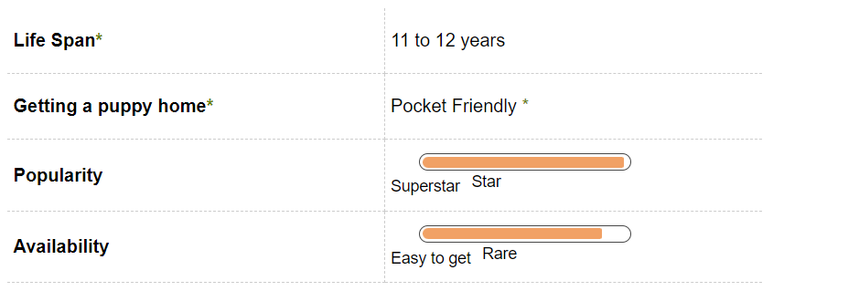
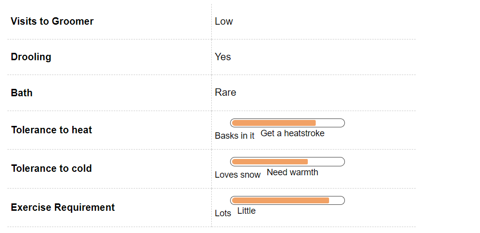
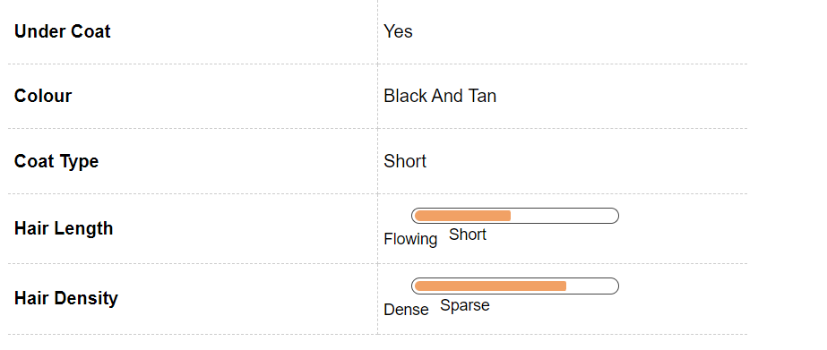
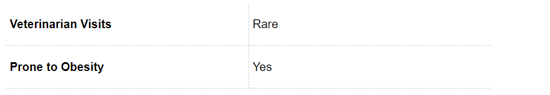
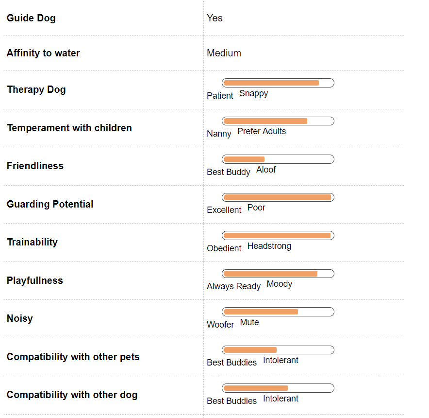
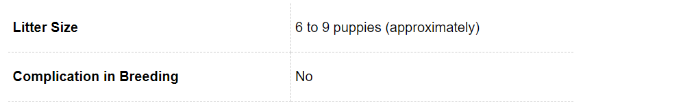
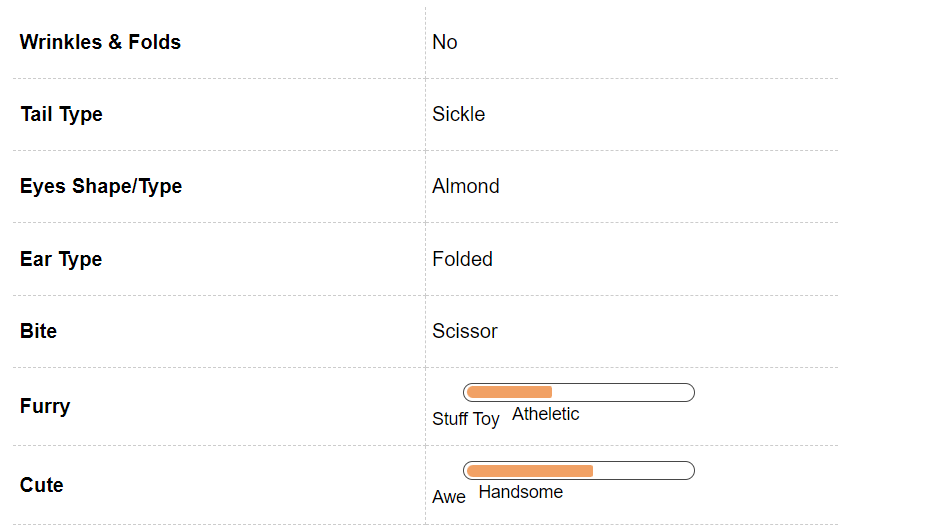

Rottweiler Dog Breed Information

Introduction
Rottweilers are strong, loyal and affectionate dogs and, when trained properly, can make excellent pets. Rotties are noble dogs who are protective by nature.
It should be mentioned at the outset that Rotties are not ideal for first-time dog families or people who intend to train a dog to be a guard dog, especially if their training methods are aggressive. It is because of poor training methods that this breed has often been convicted of being harmful and aggressive.
In the same way that the entire human race has not hitherto been judged for the wrongdoings of a few, no breed of dog can be judged for having a universally intimidating personality. They are simply robust, warm, gracious dogs when brought up well. Rotties have a natural instinct to protect their families.
They were initially trained to herd livestock and pull carts for butchers to sell meat in the markets. It is a testament to their personalities that there is a memorial dedicated to Rotties in the town of Rottweil in Germany.
One of the oldest known breeds, Rottweiler classifies under the Medium to large category. The first impression that the breed involves certain levels of kindness which drops from its beautiful eyes.
Generally found in dark colors with a wrinkled face this breed denotes age old wisdom which has been nurtured over the years. In earlier times this breed was used for sheep herding and pulling livestock but that has changed over the years.
This breed has its origin story which dates back to the Roman times. The reason for the popularity of this breed is its endearing qualities – its intelligence, its loyalty and its protective instincts.
This breed originated in Germany and is often referred to as a purebred. Rottweiler can come off too strongly sometimes because of its dominating nature but proper training can ensure that it becomes friendly and does not go out of control.
Despite its strong headed attitude and courageous nature, a Rottweiler can suffer from things like separation anxiety and quickly gets attached to its ownersin a very short period because of its sensitive nature. This breed also needs certain amounts of exercise as it is a physically active breed.
Today, this working breed is used as a guard dog by police squads. Rottweiler’s have a very individual kind of personality, as individuals differ so do dogs of this breed.
You may across a serious Rottweiler one day who loves sitting in a corner and observing people and you may chance upon an overexcited bundle of joy who keeps jumping and hopping everywhere. Generally a Rottweiler is a calm dog who can also come off as being aloof.
This breed is a great learner, it soaks up most information and training that you feed him. This breed should be trained from the first day it’s bought home.
One of the most important things to be taught to this breed is how to be social.
Training and early socialization are key to a well-adjusted Rottweiler. A large part of our responsibilities towards this breed also involves educating people on the true nature of the Rottie and discourage the clichéd and false notion that they are harmful dogs.
History
Rotties are believed to have descended from the Molossus, a mastiff-like dog. Their ancestors marched to Germany with the Romans and were used to herd the cattle that sustained the soldiers.
These dogs also guarded the cattle at night. In order to keep their money safe from thieves, cattlemen put their purses around the Rottweiler’s neck whilst returning home.
Because they were used to herd animals much larger than themselves, Rottweilers continue to be amongst the strongest breeds the world over. To this day, they have formidable strength which they are not shy to use.
When rail transport replaced cattle drives, the Rottweiler lost its job and became almost extinct in the late 1800s. It was after World War II that this breed regained its popularity, when it was best known for being an excellent obedience dog.
Around the mid-1990s, Rotties were at the peak of their popularity. This was not the best thing to happen to the breed, because it gave rise to a large crop of unethical breeders who did not care to raise healthy dog with good temperaments.
Rottweiler’s earliest sightings are as far back as the Roman Empire where this breed used to follow around cattle and soldiers in the narrow passages between Germany and Switzerland. The area where this breed was first found later developed into a small town from a barely there village and consequently when the middle ages started this breed become an accomplice for the hunters around the area.
Rottweiler were assigned to take care of sheep’s during the night and guide them during the day, this meant that the breed would have to be bred in a way that it was sturdy and had enough force and power to tend to the sheep. During that time, there were a number of local breeds which would have come up with inter breeding between the Rottweiler and local German breeds which used to come around with the local passerby’s.
The International Club for Leonobergs and Rottweiler dogs was formed in the year 1899 in the country of Germany. The first standard breed under this club and called Rottweiler was produced in the year 1901.
Their motto which is still in place, is ‘Rottweiler breeding is working dog breeding’. Very interestingly, Rottweiler’s are associated as butcher dog, the reason for this is that when cattle herding was banned by law, this breed was used as a draught dog by Butcher’s. After herding was banned, the count of this breed reduced drastically and later there was a society which was formed for the protection and preservation of these dogs. This was roughly around 1907.
In the modern day, when herding is no longer a lucrative activity, Rottweiler is used as a guard dog in most places , used for customs and army. They are a favorite of the armed forces, the association dating back to the roman times.
Rottweiler was recognized under the American Kennel club in the year 1931. The bad press that Rotts get today, is primarily due to this indiscriminate breeding.
Today, dedicated and reputed breeders are trying to turn the breed around and give them their noble, strong personality and reputation back.
Unique Aspects
The first most noticeable thing about Rotties is their large head and strong jaw. It is often more because of their appearance than personality that Rotties are pre-judged as being aggressive.
The iron jaw of a Rottie can exert pressure of over 149kg per inch, and you can tell than the Rottie is aware of this by the way he walks his confident walk. Rest assured, he won’t be inspired to use it till you teach him to or mistreat him enough.
Rotties are also known for their colour. They’re amongst the few breeds that come only in one colour, barring slight difference in the shade of their markings.
Rotties make excellent guard dogs and companion dogs alike, but need to be socialised and trained at a very early age, by a firm yet gentle and patient human. Rottweilers love people and want to be with their families as much as they can. Leaving them alone for long periods of time can lead them to become destructive.
If raised with children, Rotties do very well around them. All play between Rotties and children, however, is best supervised by an adult. Because of their natural herding instinct, Rottweilers are prone to "bump" children, which may not be gentle on toddlers.
Fun Trivia

The Omen portrays the Rottweiler as an evil dog, a characterisation that they can do without. They also star as good guys in Lethal Weapon 3 and Entourage, the HBO series.Will Smith lives with two Rottweilers named Indo and Zakhi.
Vital Stats:
Dog Breed Group:
Working Dogs
Height:
33-35 Inches
Size:
Large
Behaviour:
Pocket Friendly
Pros and Cons
| Pros |
Cons |
|
Rottweiler is amongst the best guard dogs in the world, its loyalty knows no bounds and it has immense amount of courage. This breed will guard your home and your belongings ferociously ensuring that no harm comes to its loved one under its rule.
|
There is a view that several people have which says that Rottweiler is a ferocious dog who is prone to attacking people, but this Is only true for Rottweiler’s who haven’t been made to socialize properly. It is very important to make Rottweiler socialize properly.
|
|
This breed has an inner strength which has developed over years and years of evolution, it is also durable and physically tough. It is known sometimes to be over protective.
|
This dog by impulse is a dominating breed but proper training it can reduce jumping on its instincts. Rottweiler’s can be very territorial and can intimidate strangers, they take their time in being social which can prove to be detrimental.
|
|
Rottweiler takes his own sweet time warming up to people, one doesn’t have to worry about the breed being overly friendly with anyone. Rottweiler is a breed that is excellent with children, this breed will protect a child and also be an excellent babysitter in one go.
|
Rottweiler’s also need to be disciplined immensely. This breed is also slightly stubborn and dominating so the owners need to maintain that they are the man in charge.
|
Rottweiler Maintenance & Effort

Grooming
Rottweilers are relatively easy to groom, although it will need to be done regularly. They shed heavily throughout the year, so a thorough brushing once or twice a week is a must.
Rotties have a short double coat with coarse, medium length hair. You can see and feel an undercoat around the head, ears and legs.
The thickness of the undercoat in most cases is proportional to the weather, the colder the weather the thicker the undercoat. You will need a firm bristle brush to remove all dead hair and distribute the skin oils.
As with all other dogs, you will need to concentrate on the oral health of your Rottie. Make sure you familiarise the Rottie with being groomed from a young age, so that he or she does not have issues with being touch near their ears, eyes and paws.
Rottweiler's come with a double coat. This coat is generally medium in length and is coarse in texture.
Generally the thickness of the coat is codependent on the climate of the place that the breed is brought up in Rottweilers are generally black in color and they have these certain markings which can be found behind the ears, on the cheek, on legs and chest. These markings are generally of Mahoney and rustic shades.Rottweilers should only be bathed as per the need and requirements, but brushing is important.
They need to be brushed at least once every week to ensure that they aren't shedding too much hair and also that natural oils are spread properly. There needs to be careful brushing at least during the shredding season.
Feeding and Nutrition
It is important to ensure that this breed is fed a healthy diet to ensure that health problems are minimized. This dog by its nature is a meat eater and it should be fed enough meat to maintain its weight.
This breed's meals should be protein enriched and should have minimum 22 percent protein for an adult Rottweiler and the percentage needs to be increased in case of a puppy. High protein will reduce chances of weight gain.
The fat content in the food of this breed should be minimum and should not be crossing 16% in case of an adult and 18% in case of a puppy. This fat should also be a recognized fat and not anything vague as animal fat.
A healthy Rottweiler who has access to healthy food will also start looking better. Its coat will shine and it will have reduced chances of any health problem.
Rottweilers shouldn't be overfed because an obese Rottweiler is not a healthy pet to have. The protein that is being fed to the Rottweiler should be higher in animal protein in comparison to vegetable protein.
The food should also have a certain amount of calcium in addition to protein and fats. A Rottweiler puppy should be fed multiple times a day with a decent portion size.
Food, especially for a puppy Rottweiler, needs to be high in nutrition. An Adult Rottweiler can be fed twice a day but it is necessary to see that they are not overfed.
There needs to be a proper feeding schedule for a Rottweiler. Along with proper feeding, they also need to exercise regularly.
Rottweiler Hair & Coat

Rottweiler Health & Care

Common Health Issues
Rotties are generally healthy but, like all dogs, are prone to some generic and genetic conditions. Hip Dysplasia is a common condition amongst Rotties, where the thigh bone does not fit in snugly at the hip joint.
Dogs will express pain or exhibit lameness in one or both hind legs, if they are suffering from hip dysplasia. This condition can be managed with medication if mild, and surgery if extreme.
Rotties are generally prone to bone problems, because of their sheer bulk. They are also big eaters, so bone problems can be aggravated if they put on more weight than they need to, so ensure a healthy balanced diet for your Rott.
This breed is also prone to developing osteosarcoma, a kind of aggressive bone cancer. Gastric bloat is another common Rottweiler ailment, in which the stomach fills up with excess gas and twists.
This can be fatal if it isn’t detected quickly and treated immediately. If you find your Rottie drooling excessively or retching without vomiting, or observe an unnatural bloat around the abdomen, it’s time for a vet visit.
Rottweiler Behavior

Temperament
It is said that a dog’s personality is a reflection of his human companion's, and it can’t be truer than in the case of a Rottie. Positive reinforcement is the single best way to encourage good behaviour in this breed.
If the entire human race should not be judged due to the sins of a few, the same is true of any dog breed. A large part of living with a Rottie should entail educating people of the stellar qualities of this breed and discourage subscribing to the general unfounded theory that all Rotties have an aggressive streak.
Rotties can be excellent companion dogs for families with other animals and even kids, provided they are socialised from a very young age and trained by a firm yet gentle master. You can’t show Rotties who’s boss by bullying them, because that’s something they’re very good at giving as good as they get. Instead, introduce them to a variety of people, animals, places, smells and sights at a young age, so that they are less likely to be startled and uncomfortable as they grow into adulthood.
Rotties can be great around kids, but if you have very young children, it’s best to supervise playtime. Because of their herding mentality, Rotties can nuzzle or nudge kids too hard, without knowing their own strength. They are noble and loyal dogs and these are the qualities that you will do well to bring out in them.
Environment
A beagle is apt for apartment living as well as for large houses. Large houses will ensure that your pet beagle has a lot of space to explore and stimulate his / her sense of smell.
For small apartments, Beagle work great because of their small and compact size.
However, pet parents who are living in apartments will have to ensure that there is a regular exercise regime so that their pet does not become hyperactive or destructive.
Beagles are extremely loud dogs and have a characteristic howl. If you live in apartments, your neighbours might object to the loud howling at unusual hours.
It is best to keep Rottweilers in a house with a preferably fenced-in yard. Although they can adapt to apartment living, you will have to ensure that your Rottie gets ample exercise every day, so that he or she does not get bored and hence destructive.
Rotties love walks and hikes, but it is best to take them everywhere on leash, to minimise negative feedback from people who continue to have preconceived If there are other pets at home, then ensure that the Rottie gets acclimatized with them when they are puppies.
They take longer to adjusting with same-sex dogs, so work hard to socialise them as early as possible.
Training & Intelligence
Rotties are warm, sincere, confident and loyal dogs. However, training and socialisation is not an option for these dogs; it is mandatory. Their intelligence and willingness to learn will ensure that you have a rewarding time training them, but be sure to use only positive reinforcement methods.
A Rottie doesn’t take well to being told who’s boss rudely. You have to be calm, patient and firm, admonishing them firmly for bad behaviour and praising them with great zest for good behaviour.
Trust is key. If you can win your Rottie’s trust, that’s half the battle won. Rottweilers thrive when they have enough mental and physical exercise, so never deny them a quick game of 'fetch' or a nice long run in the park.
Rottweiler Breeding

Procreation
Rotties are generally healthy, robust dogs with few problems during breeding. They have large litters, with an average of six to nine puppies being born in each litter.
The average Rottie will attain sexual maturity between six and nine months of age, but they are still too young to be mated. If you must mate your Rottie, wait till he or she is at least two years old.
Finally, as in the case of any breed, ensure that you have found responsible families to take the puppies even before you get them mated, so that they don't fall into the wrong hands. If you’re breeding your dog for the first time, ensure that you're consulting with a vet regularly and have adequate help during the birthing process.
Puppies
Rottie puppies with their naughty nature and big melting eyes, are a treat! Remember to channelize their curiosity in the right direction. Expose the puppies to as many sights, sounds, scents, people and animals as you possibly can, so that they grow up to be well-adjusted adults.
Make sure you housebreak these puppies as effectively as you can. Puppies can leave you little presents anywhere in the house, and a grown Rottie that isn’t housebroken means really large, smelly presents!
Rottweiler Appearance

Body
Rotties have very large heads with broad skulls and deep muzzles. The forehead is fairly arched and the cheeks, well-boned.
The body is square, compact and powerful. The chest is deep and broad with a straight back and a sloping rump.
The tail is set high and carried horizontally when intact. Tails used to be docked to facilitate cart pulling and although this is still done often, docking is now banned in the United Kingdom.
The forelegs are straight and muscular and the hind legs are well-angled. The feet are compact, with the front feet being round and the hind feet being longer.
The toes are well arched with almost black pencil-like markings. It is best to remove the Rottie’s rear dewclaws.
The nails are short and black. The eyes are almond shaped, intelligent and soft.
The ears are small and set high and close to the cheeks. The nose is well developed and black.
An alert Rottweiler often develops wrinkles on his or her forehead. Rotties have a short double coat which is straight and coarse.
The outer coat is of medium length, shorter on the head, ears and legs. The undercoat is found mainly on the neck and thighs, with the thickness depending on the climate in which the dog is bred.
Rotties are always black with markings that are rust or mahogany. These marking appear over their eyes, on the cheeks, on each side of the muzzle, on the chest and leg and beneath the tail. Males are typically 24 to 27 inches tall and weigh 95 to 130 pounds (43-59kg). Females are typically 22 to 25 inches tall and weigh 85-115 pounds (38-52kg).